XR action map
Godot có tính năng action map như một phần của hệ thống XR. Hiện tại hệ thống này là một phần của module OpenXR. Có kế hoạch đưa WebXR vào hệ thống này trong tương lai gần, vì vậy trong tài liệu này chúng tôi gọi nó là hệ thống XR action map. Nó triển khai hệ thống action map tích hợp sẵn của OpenXR gần như đúng như được cung cấp.
Hệ thống XR action map cung cấp đầu vào, dữ liệu vị trí và đầu ra của controller XR cho game/ứng dụng của bạn. Nó làm việc này bằng cách cung cấp các action được đặt tên, có thể tùy chỉnh theo game/ứng dụng của bạn, và gắn (bind) chúng với các đầu vào và đầu ra thực tế trên thiết bị XR.
Vì XR action map hiện là một phần của module OpenXR, OpenXR cần được bật trong cài đặt dự án để hiển thị nó:

Sau đó bạn sẽ thấy giao diện XR Action Map ở cuối màn hình:
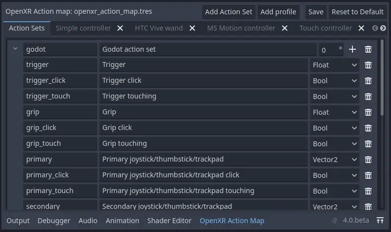
Ghi chú
Hệ thống đầu vào tích hợp sẵn của Godot có nhiều điểm chung với hệ thống XR action map. Thực tế, ý tưởng ban đầu của chúng tôi là bổ sung chức năng vào hệ thống đầu vào hiện có và cung cấp dữ liệu cho hệ thống action map của OpenXR. Chúng tôi có thể xem xét lại ý tưởng đó vào một lúc nào đó, nhưng hóa ra có quá nhiều vấn đề cần vượt qua. Có thể kể đến:
Hệ thống đầu vào của Godot chủ yếu xoay quanh đầu vào dạng nút, trong khi XR bổ sung thêm trigger, trục, pose và haptic (đầu ra). Điều này sẽ khiến hệ thống đầu vào phức tạp hơn nhiều với những tính năng không hoạt động với controller thông thường hoặc mâu thuẫn với cách tiếp cận hiện tại. Chúng tôi cho rằng điều này sẽ gây nhầm lẫn cho phần lớn người dùng Godot.
Hệ thống đầu vào của Godot làm việc với dữ liệu đầu vào thô, được phân tích và kích hoạt việc phát ra action. Dữ liệu đầu vào này được cung cấp cho người dùng cuối. OpenXR ẩn hoàn toàn dữ liệu thô và tự phân tích giúp chúng ta, chúng ta chỉ truy cập được dữ liệu action đã phân tích. Sự không nhất quán này dễ dẫn đến lỗi khi người dùng không để ý cố dùng thiết bị XR như một thiết bị đầu vào thông thường.
Hệ thống đầu vào của Godot cho phép thay đổi đầu vào nào được gắn với action trong lúc chạy, OpenXR thì không.
Hệ thống đầu vào của Godot dựa trên device id, vốn không có ý nghĩa trong OpenXR.
Điều này có nghĩa là một game/ứng dụng kết hợp đầu vào truyền thống với controller XR sẽ có sự tách biệt. Với hầu hết ứng dụng, chỉ một trong hai được dùng nên đây không được xem là vấn đề. Xét cho cùng, đây là một giới hạn của hệ thống.
Action map mặc định
Godot sẽ tự động tạo một action map mặc định nếu không tìm thấy file action map.
Cảnh báo
Action map mặc định này được thiết kế để giúp nhà phát triển chuyển game/ứng dụng XR từ Godot 3 sang Godot 4. Do đó, action map này về cơ bản gắn tất cả đầu vào đã biết trên mọi controller được hỗ trợ mặc định với các action theo kiểu một-một. Đây không phải là ví dụ tốt về cách thiết lập action map. Tuy nhiên nó cho phép nhà phát triển mới có điểm khởi đầu khi muốn làm quen với Godot XR, giúp họ không phải thiết kế ngay một action map phù hợp cho game/ứng dụng của mình.
Trong hướng dẫn từng bước này, chúng ta sẽ bắt đầu với một action map trống. Bạn có thể xóa mục "Godot action set" ở trên cùng bằng cách nhấn biểu tượng thùng rác. Việc này sẽ xóa toàn bộ action. Bạn cũng có thể muốn xóa các controller mà bạn không định thiết lập, sẽ nói thêm về điều này sau.
Action set
Ghi chú
Trước khi đi sâu, bạn sẽ thấy thuật ngữ XR runtime được dùng xuyên suốt tài liệu này. XR runtime là phần mềm điều khiển và tương tác với headset AR hoặc VR. XR runtime sau đó cung cấp nó cho chúng ta thông qua một API như OpenXR. Vì vậy:
với Steam, đó là SteamVR,
với Meta trên desktop, đó là Oculus Client (kể cả khi dùng Quest link),
với Meta trên Quest, đó là OpenXR client gốc của Quest,
trên Linux, có thể là Monado, v.v.
Action map cho phép chúng ta tổ chức các action thành các set. Mỗi set có thể được bật hoặc tắt riêng.
Ý tưởng ở đây là bạn có thể có các set khác nhau cung cấp binding cho các tình huống khác nhau. Bạn có thể có:
một set
Character controlcho khi bạn đi lại,một set
Vehicle controlcho khi bạn điều khiển phương tiện,một set
Menucho khi menu đang mở.
Khi đó chỉ action set phù hợp với trạng thái hiện tại của game/ứng dụng mới được bật.
Điều này đặc biệt quan trọng nếu bạn muốn gắn cùng một đầu vào trên controller với các action khác nhau. Ví dụ:
trong set
Character control, bạn có thể có actionJump,trong set
Vehicle control, bạn có thể có actionAccelerate,trong set
Menu, bạn có thể có actionSelect.
Tất cả đều được gắn với trigger trên controller.
OpenXR chỉ gắn một đầu vào hoặc đầu ra với một action duy nhất. Nếu cùng một đầu vào hoặc đầu ra được gắn với nhiều action, action trong action set đang hoạt động có độ ưu tiên cao nhất sẽ là action được cập nhật/sử dụng. Vì vậy, trong ví dụ trên, điều quan trọng là chỉ một action set được kích hoạt.
Với game/ứng dụng XR đầu tiên, chúng tôi rất khuyến khích bắt đầu chỉ với một action set duy nhất và đừng thiết kế quá phức tạp.
Vì vậy, trong hướng dẫn này chúng ta sẽ tạo một action set duy nhất tên là my_first_action_set. Chúng ta làm việc này bằng cách nhấn nút :
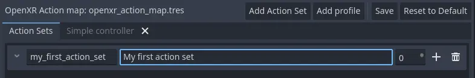
Các cột trong bảng như sau:
Col |
Giá trị |
Mô tả |
|---|---|---|
1 |
my_first_action_set |
Đây là tên nội bộ của action set. OpenXR không đặt ra giới hạn cụ thể nào cho tên này ngoài độ dài, tuy nhiên một số XR runtime không chấp nhận khoảng trắng hoặc ký tự đặc biệt. |
2 |
My first action set |
Đây là tên dễ đọc cho con người của action set. Một số XR runtime sẽ hiển thị tên này cho người dùng cuối, chẳng hạn trong các hộp thoại cấu hình. |
3 |
0 |
Đây là độ ưu tiên của action set. Nếu nhiều action set đang hoạt động có action được gắn với cùng đầu vào hoặc đầu ra của controller, action set có giá trị ưu tiên cao nhất sẽ quyết định action nào được cập nhật. |
Action
Trong XR action map, action là các thực thể mà game/ứng dụng của bạn sẽ tương tác. Ví dụ, chúng ta có thể định nghĩa một action Shoot và đầu vào gắn với action đó sẽ kích hoạt signal button_pressed trên node XRController3D tương ứng trong scene, với Shoot là tham số name của signal.
Bạn cũng có thể kiểm tra (poll) trạng thái hiện tại của một action. Ví dụ, XRController3D có phương thức is_button_pressed.
Action có thể dùng cho cả đầu vào lẫn đầu ra, và mỗi action có một kiểu xác định hành vi của nó.
Kiểu
Boolđược dùng cho đầu vào rời rạc như các nút bấm.Kiểu
Floatđược dùng cho đầu vào analog như cò (trigger).
Hai kiểu này đặc biệt vì chúng là những kiểu duy nhất có thể hoán đổi cho nhau. OpenXR sẽ tự xử lý việc chuyển đổi giữa đầu vào và action kiểu Bool và Float. Bạn có thể lấy giá trị của một action kiểu Float bằng cách gọi phương thức get_float trên node XRController3D của bạn. Node này phát signal input_float_changed khi giá trị thay đổi.
Ghi chú
Khi đầu vào analog được truy vấn như nút bấm, một ngưỡng sẽ được áp dụng. Hiện tại ngưỡng này hoàn toàn do XR runtime quản lý. Trong tương lai, Godot dự kiến sẽ được mở rộng để cho phép kiểm soát các ngưỡng này ở một mức độ nào đó.
Kiểu Vector2 định nghĩa đầu vào là đầu vào trục. Touchpad, thumbstick và các đầu vào tương tự được cung cấp dưới dạng vector. Bạn có thể lấy giá trị của một action kiểu Vector2 bằng cách gọi phương thức get_vector2 trên node XRController3D của bạn. Node này phát signal input_vector2_changed khi giá trị thay đổi.
Kiểu Pose định nghĩa một đầu vào được theo dõi trong không gian. OpenXR có nhiều đầu vào "pose": aim, grip và palm. Node XRController3D của bạn được tự động định vị dựa trên action pose được gán cho thuộc tính pose của node này. Chúng ta sẽ nói thêm về pose ở phần sau.
Ghi chú
Phần triển khai OpenXR trong Godot còn cung cấp một pose đặc biệt tên là Skeleton. Đây là một phần của phần triển khai theo dõi bàn tay (hand tracking). Pose này được cung cấp thông qua action skeleton, vốn được hỗ trợ bên ngoài hệ thống action map. Vì vậy nó luôn có mặt nếu hand tracking được hỗ trợ. Bạn không cần bind action vào pose này để sử dụng nó.
Cuối cùng, kiểu đầu ra duy nhất là Haptic, cho phép chúng ta đặt cường độ phản hồi xúc giác (haptic), chẳng hạn như rung tay cầm. Tay cầm có thể có nhiều đầu ra haptic, và hỗ trợ cho áo haptic sắp có trong OpenXR.
Vậy hãy thêm một action cho aim pose, bằng cách nhấn nút + của action set:
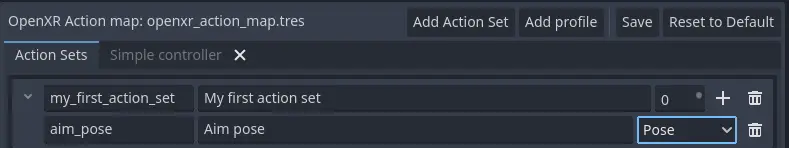
Các cột trong bảng như sau:
Col |
Giá trị |
Mô tả |
|---|---|---|
1 |
aim_pose |
Đây là tên nội bộ của action. OpenXR không đặt ra giới hạn cụ thể nào cho tên này ngoài độ dài, tuy nhiên một số XR runtime sẽ không chấp nhận dấu cách hoặc ký tự đặc biệt. |
2 |
Aim pose |
Đây là tên dễ đọc của action. Một số XR runtime sẽ hiển thị tên này cho người dùng cuối, ví dụ trong các hộp thoại cấu hình. |
3 |
Pose |
Loại của action này. |
OpenXR định nghĩa một số pose đầu vào có thể bind, thường có trên các tay cầm. Không có quy tắc nào về việc pose nào được hỗ trợ trên từng tay cầm. Các pose mà OpenXR hiện định nghĩa gồm:
Aim pose trên hầu hết tay cầm được đặt hơi lệch về phía trước tay cầm và hướng về phía trước. Đây là pose rất phù hợp để dùng cho tia laser chỉ hướng hoặc để căn nòng vũ khí.
Grip pose trên hầu hết tay cầm được đặt tại vị trí nút grip trên tay cầm. Hướng của pose này khác nhau giữa các tay cầm, và có thể khác nhau với cùng một tay cầm trên các XR runtime khác nhau.
Palm pose trên hầu hết tay cầm được đặt ở giữa lòng bàn tay đang cầm tay cầm. Đây là pose mới và chưa có trên mọi XR runtime.
Ghi chú
Nếu dùng hand tracking, hiện có sự khác biệt lớn về cách triển khai giữa các XR runtime. Vì vậy action map hiện chưa phù hợp cho hand tracking. Việc này đang được phát triển, hãy chờ cập nhật.
Hãy hoàn thiện danh sách action cho một game/ứng dụng bắn súng rất đơn giản:
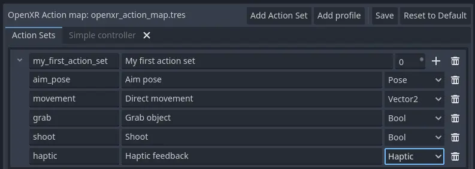
Các action chúng ta đã thêm là:
movement, cho phép người dùng di chuyển ra ngoài phạm vi theo dõi room scale thông thường.
grab, phát hiện người dùng muốn cầm một vật gì đó.
shoot, phát hiện người dùng muốn bắn vũ khí đang cầm.
haptic, cho phép chúng ta xuất phản hồi haptic.
Lưu ý rằng chúng ta không phân biệt tay trái và tay phải. Điều này được xác định ở bước tiếp theo. Hệ thống action được triển khai sao cho bạn có thể bind cùng một action cho cả hai tay. Node XRController3D tương ứng sẽ phát signal.
Cảnh báo
Với cả grab và shoot, chúng ta đã dùng kiểu Bool. Như đã đề cập, OpenXR tự động chuyển đổi từ điều khiển analog, tuy nhiên hiện không phải XR runtime nào cũng áp dụng ngưỡng hợp lý.
Như một cách khắc phục, chúng tôi khuyên bạn dùng kiểu Float khi tương tác với cò và nút grip, rồi tự áp dụng ngưỡng của riêng bạn.
Với các nút như A/B/X/Y và tương tự, vốn không có tùy chọn analog, kiểu Bool hoạt động tốt.
Ghi chú
Bạn có thể bind cùng một action cho nhiều đầu vào trên cùng một tay cầm trong cùng một profile. Khi đó XR runtime sẽ cố gắng kết hợp các đầu vào.
Với đầu vào
Bool, runtime sẽ thực hiện phépORgiữa các nút.Với đầu vào
Float, runtime sẽ lấy giá trị cao nhất trong các đầu vào được bind.Hành vi với đầu vào
Poselà không xác định, nhưng nhiều khả năng đầu vào được bind đầu tiên sẽ được dùng.
Bạn không nên bind nhiều action của cùng một action set vào cùng một đầu vào của tay cầm. Nếu làm vậy, hoặc nếu action được bind từ nhiều action set nhưng có độ ưu tiên chồng lấn, hành vi là không xác định. XR runtime có thể đơn giản là không chấp nhận action map của bạn, hoặc xử lý theo kiểu ai đến trước được phục vụ trước.
Chúng tôi vẫn đang tìm hiểu các giới hạn xung quanh việc bind nhiều action vào cùng một đầu ra, vì tình huống này là hợp lý. Đặc tả OpenXR dường như không cho phép điều này.
Giờ đã định nghĩa xong các action cơ bản, đến lúc kết nối chúng.
Profile
Trong OpenXR, các binding của tay cầm được lưu trong cái gọi là "Interaction Profiles". Chúng tôi rút gọn thành "Profiles" vì nó chiếm ít chỗ hơn.
Tên chung này được chọn vì tay cầm không bao quát toàn bộ hệ thống. Hiện cũng có profile cho tracker, điều khiển từ xa và bút được theo dõi. Ngoài ra còn có các điều khoản dự phòng cho thiết bị như máy chạy bộ, áo haptic, v.v. dù chúng chưa có trong đặc tả.
Cảnh báo
Điều quan trọng cần biết là OpenXR kiểm tra nghiêm ngặt các thiết bị được hỗ trợ. Đặc tả lõi xác định một số tay cầm và thiết bị tương tự cùng các đầu vào và đầu ra mà chúng hỗ trợ. Mọi XR runtime phải chấp nhận các interaction profile này kể cả khi chúng không áp dụng được.
Thiết bị mới được thêm vào thông qua các extension, và XR runtime phải chỉ rõ những extension nào chúng hỗ trợ. XR runtime không hỗ trợ một thiết bị được thêm qua extension sẽ không chấp nhận các profile đó. XR runtime không hỗ trợ các kiểu đầu vào hoặc đầu ra được bổ sung thường sẽ bị crash nếu được cung cấp chúng.
Vì vậy Godot lưu metadata của tất cả thiết bị hiện có, các đầu vào và đầu ra của chúng, và extension nào bổ sung hỗ trợ cho chúng. Bạn có thể tạo interaction profile cho mọi thiết bị bạn muốn hỗ trợ. Godot sẽ lọc bỏ những profile không được XR runtime mà người dùng đang dùng hỗ trợ.
Điều này có nghĩa là để hỗ trợ thiết bị mới, bạn có thể cần cập nhật lên phiên bản Godot mới hơn.
Tuy nhiên, cũng cần lưu ý rằng action map đã được thiết kế với điều này trong đầu. Khi thiết bị mới ra mắt thị trường, hoặc khi người dùng của bạn dùng thiết bị mà bạn không có, hệ thống action map dựa vào XR runtime. Nhiệm vụ của XR runtime là chọn interaction profile phù hợp nhất trong số các profile đã được chỉ định và điều chỉnh nó cho tay cầm mà người dùng đang dùng.
Cách XR runtime làm điều này phụ thuộc vào phần triển khai của từng runtime, nên giữa các runtime có sự khác biệt rất lớn. Một số runtime thậm chí còn cho phép người dùng tự chỉnh sửa binding.
Một cách tiếp cận phổ biến của runtime là trước tiên tìm interaction profile khớp. Nếu không tìm thấy, nó sẽ kiểm tra các profile phổ biến nhất như profile của "Touch controller" và thực hiện chuyển đổi. Nếu vẫn không được, nó sẽ kiểm tra profile chung "Simple controller".
Ghi chú
Có một kết luận quan trọng rút ra ở đây: khi tìm thấy tay cầm và action map được áp dụng cho nó, XR runtime không bị giới hạn trong đúng các cấu hình bạn đã thiết lập trong trình chỉnh sửa action map của Godot. Dù runtime thường sẽ chọn ánh xạ phù hợp dựa trên một trong các binding bạn thiết lập trong action map, nó vẫn có thể đi lệch khỏi đó.
Ví dụ, khi profile Touch controller được dùng, bất kỳ tình huống nào sau đây đều có thể xảy ra:
chúng ta có thể đang dùng tay cầm Quest 1,
chúng ta có thể đang dùng tay cầm Quest 2,
chúng ta có thể đang dùng tay cầm Quest Pro nhưng không có profile Quest Pro nào được cung cấp, hoặc XR runtime đang dùng không hỗ trợ tay cầm Quest Pro,
đó có thể là một tay cầm hoàn toàn khác mà không có profile nào được cung cấp, nhưng XR runtime đang dùng binding của Touch làm nền tảng.
Do đó, hiện không có cách nào biết chắc chắn người dùng thực sự đang dùng tay cầm nào.
Cảnh báo
Cuối cùng, và đây là điều khiến nhiều người vấp phải, binding không cố định. Việc XR runtime cho phép người dùng tùy chỉnh binding là hoàn toàn được phép, thậm chí là điều được kỳ vọng.
Hiện chưa XR runtime nào cung cấp chức năng này, dù SteamVR có sẵn một giao diện từ hệ thống action map của OpenVR mà vẫn truy cập được. Tuy nhiên việc này đang được tích cực phát triển.
Binding tay cầm đầu tiên
Hãy thiết lập binding tay cầm đầu tiên, lấy Touch controller làm ví dụ.
Nhấn "Add profile", tìm Touch controller và thêm nó vào. Nếu nó không có trong danh sách thì có thể nó đã được thêm rồi.
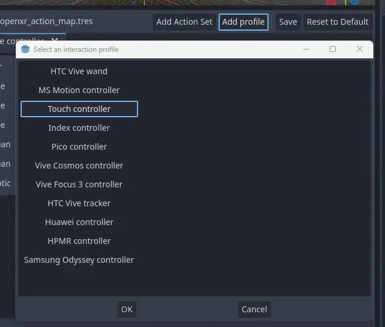
Giao diện giờ hiển thị các bảng cho cả tay cầm trái và phải. Các bảng này chứa mọi đầu vào và đầu ra có thể có của từng tay cầm. Chúng ta có thể dùng nút + cạnh mỗi mục để bind nó vào một action:
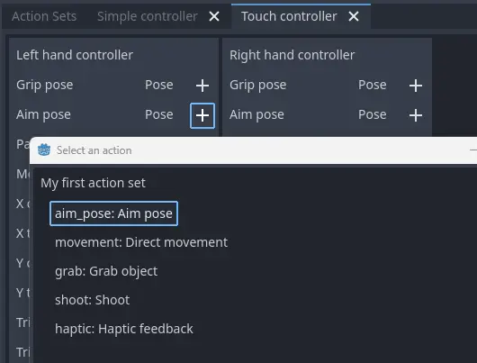
Hãy hoàn tất cấu hình:
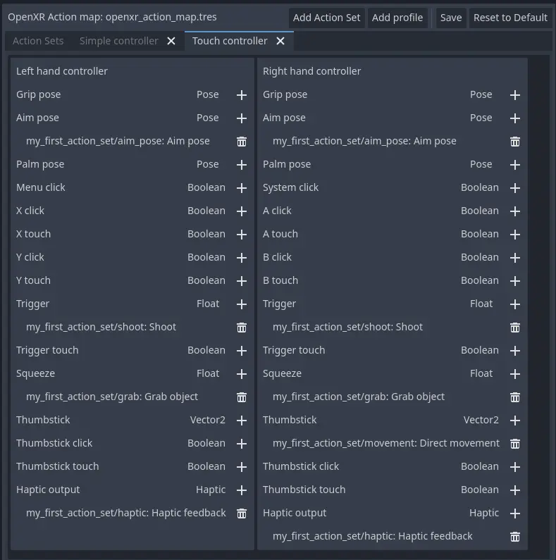
Mỗi action được bind vào đầu vào hoặc đầu ra tương ứng trên cả hai tay cầm để cho biết chúng ta hỗ trợ action đó trên tay cầm nào cũng được. Ngoại lệ là action movement, chỉ được bind vào tay cầm bên phải. Nhiều khả năng chúng ta muốn dùng thumbstick tay trái cho mục đích khác, chẳng hạn chức năng dịch chuyển tức thời (teleport).
Khi phát triển game/ứng dụng, bạn phải tính đến khả năng người dùng thay đổi binding và bind movement vào thumbstick tay trái.
Cũng lưu ý rằng các action boolean shoot và grab được liên kết với đầu vào kiểu Float. Như đã đề cập, OpenXR sẽ chuyển đổi giữa hai kiểu, nhưng hãy đọc cảnh báo về chủ đề này ở phần trước trong tài liệu.
Ghi chú
Một số đầu vào dường như xuất hiện nhiều lần trong danh sách.
Ví dụ, nút X xuất hiện hai lần, một lần là X click và một lần là X touch. Đó là do Touch controller có cảm biến điện dung.
X touchsẽ là true nếu người dùng chỉ chạm vào nút X.X clicksẽ là true khi người dùng thực sự nhấn nút xuống.
Tương tự, với thumbstick chúng ta có:
Thumbstick touch, là true nếu người dùng đang chạm vào thumbstick.Thumbstick, cho giá trị hướng mà thumbstick đang được đẩy tới.Thumbstick click, là true khi người dùng đang nhấn thumbstick xuống.
Cần lưu ý rằng chỉ một số ít tay cầm XR hỗ trợ cảm biến chạm hoặc có tính năng nhấn trên thumbstick. Hãy ghi nhớ điều này khi thiết kế game/ứng dụng. Hãy đảm bảo chúng chỉ được dùng cho các tính năng tùy chọn của game/ứng dụng.
Bộ điều khiển đơn giản
"Simple controller" là một tay cầm chung mà OpenXR cung cấp làm phương án dự phòng. Chúng ta sẽ áp dụng ánh xạ của mình:
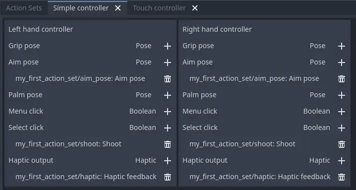
Như thấy rõ ràng một cách đáng tiếc, simple controller thường quá đơn giản và không đáp ứng được gì ngoài những game/ứng dụng VR đơn giản nhất.
Đó là lý do nhiều XR runtime chỉ dùng nó như phương án cuối cùng, và trước tiên sẽ thử dùng binding từ một trong các hệ thống phổ biến hơn làm phương án dự phòng.
Ghi chú
Vì simple controller nhiều khả năng không đáp ứng nhu cầu của game, bạn dễ bị cám dỗ cung cấp binding cho mọi tay cầm mà OpenXR hỗ trợ. Action map mặc định dường như gợi ý đây là cách làm hợp lệ. Như đã đề cập, action map mặc định được thiết kế để dễ chuyển đổi từ Godot 3.
OpenXR Working Group khuyến nghị chỉ thiết lập binding cho những tay cầm mà nhà phát triển thực sự đã thử nghiệm. Các XR runtime được thiết kế với điều này trong đầu. Chúng có thể ánh xạ lại một binding được cung cấp tốt hơn so với việc nhà phát triển phỏng đoán. Nhất là khi nhà phát triển không thể kiểm tra liệu điều đó có mang lại trải nghiệm thoải mái cho người dùng cuối hay không.
Đây cũng là lời khuyên của chúng tôi: hãy giới hạn action map ở những interaction profile cho các thiết bị bạn thực sự đã thử nghiệm game. Tay cầm Oculus Touch được nhiều runtime dùng rộng rãi làm tay cầm dự phòng. Nếu bạn có thể thử nghiệm game bằng Meta Rift hoặc Quest và thêm profile này, khả năng cao game của bạn sẽ chạy được với các kính khác.
Binding Modifiers
Một trong những mục tiêu chính của action map là giúp ứng dụng không cần biết phần cứng đang dùng. Tuy nhiên, đôi khi phần cứng có khác biệt vật lý đòi hỏi đầu vào phải được thay đổi theo những cách khác ngoài cách chúng được bind vào action. Nhu cầu này trải từ việc đặt ngưỡng đến việc thay đổi các đầu vào có trên tay cầm.
Binding modifier không được bật mặc định và cần được bật trong cài đặt dự án OpenXR. Ngoài ra không có gì đảm bảo các modifier này được mọi runtime hỗ trợ. Bạn cần tra cứu mức hỗ trợ của các runtime bạn nhắm tới và quyết định có dựa vào modifier hay triển khai một cơ chế dự phòng nào đó.
Nếu bạn nhắm tới nhiều runtime cùng hỗ trợ các tay cầm giống nhau, bạn có thể cần tạo action map riêng cho từng runtime. Bạn có thể kiểm soát action map mà Godot dùng bằng cách dùng các export template khác nhau cho từng runtime và dùng một feature tag tùy chỉnh để đặt action map.
Trong Godot, binding modifier được chia thành hai nhóm: modifier hoạt động ở cấp interaction profile, và modifier hoạt động trên từng binding riêng lẻ.
Binding modifier trên interaction profile
Các binding modifier áp dụng cho toàn bộ interaction profile có thể được truy cập qua nút modifier ở phía bên phải của trình chỉnh sửa interaction profile.
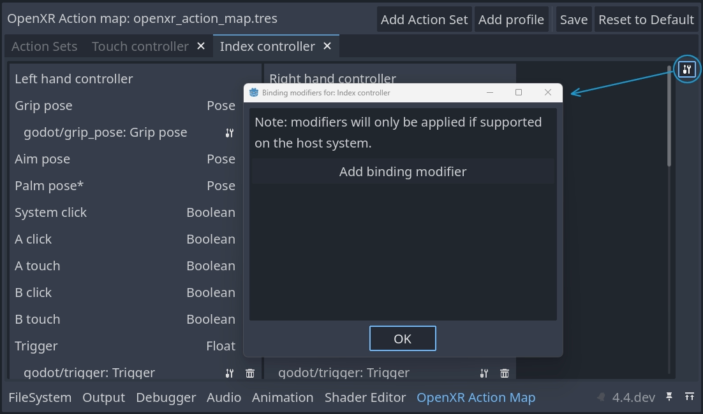
Bạn có thể thêm modifier mới bằng cách nhấn nút .
Cảnh báo
Vì Godot không biết tay cầm và runtime nào hỗ trợ một modifier, nên không có giới hạn nào khi thêm modifier. Các modifier không được hỗ trợ sẽ bị bỏ qua.
Dpad binding modifier
Dpad binding modifier thêm các đầu vào mới vào interaction profile cho mỗi đầu vào joystick và thumbpad trên tay cầm này. Nó biến đầu vào thành một dpad với các đầu vào lên, xuống, trái, phải riêng biệt, được cung cấp dưới dạng nút bấm:
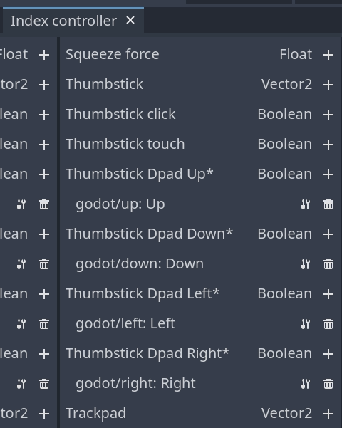
Ghi chú
Các đầu vào liên quan đến extension được đánh dấu bằng dấu hoa thị.
Để dùng dpad binding modifier, bạn cần bật extension dpad binding modifier trong cài đặt dự án:
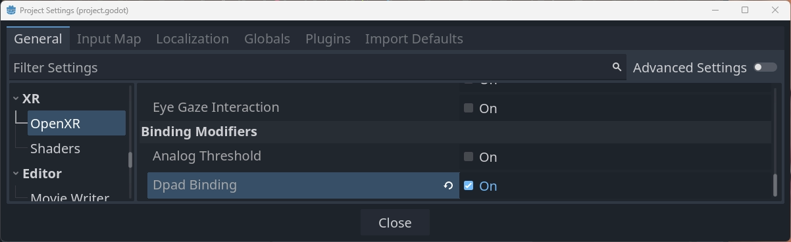
Chỉ cần bật extension là đủ để chức năng này hoạt động với cài đặt mặc định.
Việc thêm modifier là tùy chọn và cho phép bạn tinh chỉnh cách chức năng dpad hoạt động. Bạn có thể thêm modifier nhiều lần để đặt các cài đặt khác nhau cho các đầu vào khác nhau.
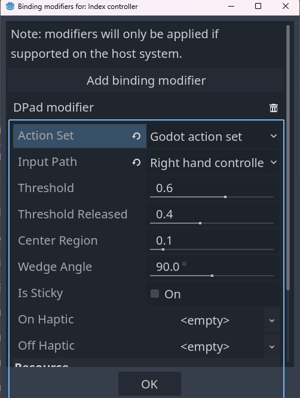
Các cài đặt này được dùng như sau:
Action Setxác định action set mà các cài đặt này được áp dụng.
Input Pathxác định đầu vào gốc được ánh xạ sang các đầu vào dpad mới.
Thresholdchỉ định giá trị ngưỡng sẽ kích hoạt một action dpad, ví dụ giá trị0.6nghĩa là nếu khoảng cách từ tâm vượt quá0.6thì action dpad được nhấn.
Threshold Releasedchỉ định giá trị ngưỡng sẽ tắt một action dpad, ví dụ giá trị0.4nghĩa là nếu khoảng cách từ tâm giảm xuống dưới0.4thì action dpad được nhả.
Center Regionchỉ định khoảng cách từ tâm để kích hoạt action ở tâm, chỉ được hỗ trợ cho trackpad.
Wedge Anglechỉ định góc của mỗi vùng hình quạt. Giá trị90 degreeshoặc thấp hơn nghĩa là lên, xuống, trái và phải mỗi hướng có một lát riêng trong đó chúng ở trạng thái được nhấn. Giá trị trên90 degreesnghĩa là các lát chồng lên nhau và nhiều action có thể cùng ở trạng thái được nhấn.
Is Sticky, khi được bật, nghĩa là action vẫn ở trạng thái được nhấn cho đến khi thumbstick hoặc trackpad di chuyển sang vùng hình quạt khác, kể cả khi nó đã rời vùng của action đó.
On Hapticcho phép chúng ta định nghĩa một đầu ra haptic được tự động kích hoạt khi action chuyển sang trạng thái được nhấn.
Off Hapticcho phép chúng ta định nghĩa một đầu ra haptic được tự động kích hoạt khi action được nhả.
Binding modifier trên từng binding
Các binding modifier áp dụng cho từng binding riêng lẻ có thể được truy cập qua nút binding modifier cạnh action được gắn với một đầu vào:
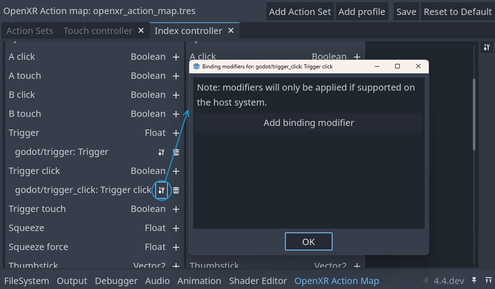
Bạn có thể thêm modifier mới bằng cách nhấn nút .
Cảnh báo
Vì Godot không biết đầu vào nào trên từng runtime hỗ trợ một modifier, nên không có giới hạn nào khi thêm modifier. Nếu extension của modifier không được hỗ trợ, modifier sẽ bị lọc bỏ lúc chạy. Modifier được thêm vào sai đầu vào có thể gây lỗi lúc chạy.
Bạn nên thử nghiệm action map trên phần cứng và runtime thực tế để xác minh thiết lập đúng.
Analog threshold modifier
Analog threshold modifier cho phép bạn chỉ định ngưỡng dùng cho bất kỳ đầu vào analog nào có đầu vào boolean, như cò. Nó quyết định khi nào đầu vào ở trạng thái được nhấn.
Để dùng modifier này, bạn phải bật extension analog threshold trong cài đặt dự án:
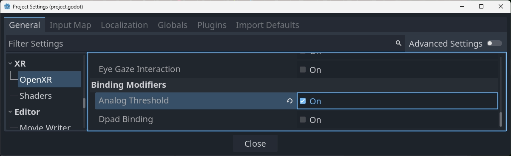
Analog threshold modifier có các cài đặt sau:
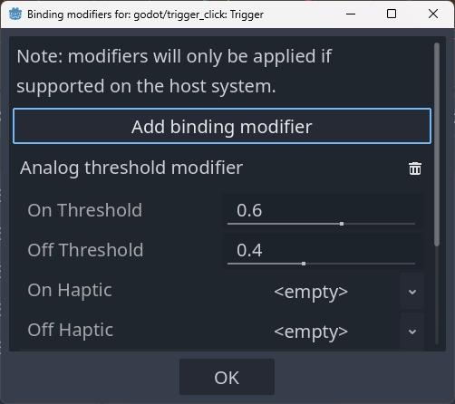
Chúng được định nghĩa như sau:
On Thresholdchỉ định giá trị ngưỡng sẽ kích hoạt action, ví dụ giá trị0.6nghĩa là khi giá trị analog vượt quá0.6thì action được đặt sang trạng thái được nhấn.
Off Thresholdchỉ định giá trị ngưỡng sẽ tắt action, ví dụ giá trị0.4nghĩa là khi giá trị analog giảm xuống dưới0.4thì action được đặt sang trạng thái được nhả.
On Hapticcho phép chúng ta định nghĩa một đầu ra haptic được tự động kích hoạt khi đầu vào được nhấn.
Off Hapticcho phép chúng ta định nghĩa một đầu ra haptic được tự động kích hoạt khi đầu vào được nhả.
Haptic trên modifier
Modifier có thể hỗ trợ đầu ra haptic tự động, được kích hoạt khi đạt tới ngưỡng.
Ghi chú
Hiện cả hai modifier có sẵn đều hỗ trợ tính năng này, tuy nhiên không có quy định nào rằng các modifier trong tương lai cũng có khả năng này. Hiện chỉ hỗ trợ một loại phản hồi haptic, nhưng trong tương lai có thể sẽ có thêm các tùy chọn khác.
Rung haptic
Rung haptic cho phép chúng ta chỉ định một xung haptic đơn giản:
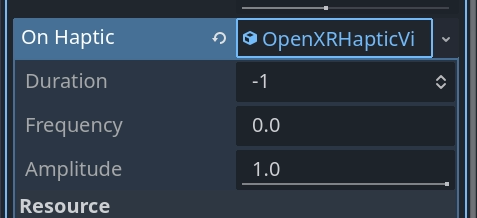
Nó có các tùy chọn sau:
Durationlà thời lượng của xung tính bằng nano giây.-1để runtime chọn giá trị tối ưu cho một xung ngắn phù hợp với phần cứng hiện tại.
Frequencylà tần số của xung tính bằng Hz.0để runtime chọn tần số tối ưu cho một xung ngắn phù hợp với phần cứng hiện tại.
Amplitudelà biên độ của xung.